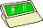

 A SIBO or EPOC drive iconbar icon is displayed for each accessible remote drive when PsiFS is connected to a remote SIBO or EPOC device using the Psion Link Protocol. The name of each drive is shown below the corresponding icon. If the connection is lost then the drive icons are replaced by the remote link icon. |
| Clicking on the iconbar icon with Select opens a filer window for the selected drive. |
Clicking on the iconbar icon with Menu displays the following menu:
|
| Clicking on the iconbar icon with Adjust disables the remote link. The idle icon is displayed to indicate the new state.
This has the same effect as selecting Disconnect from the iconbar icon menu. |
| [Contents] [Up] | Copyright © Alexander Thoukydides, 1998, 1999 |